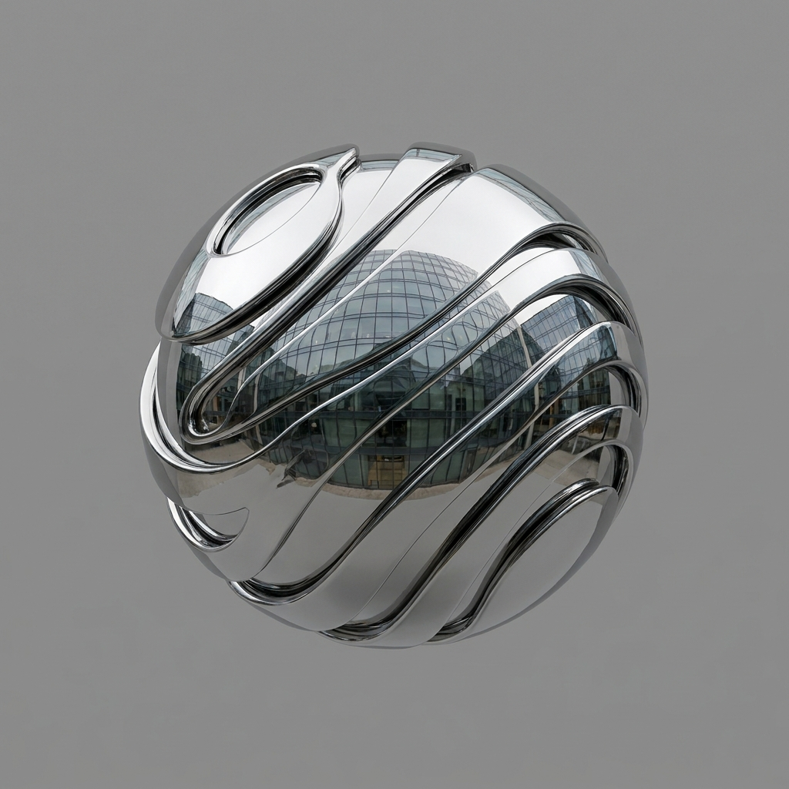

An honest geometry of stone and morning light



The Sela towers are set to become the quarter's landmark — two honest silhouettes above a street that finally has somewhere to walk to. Offices above, arcades below, and the day organised around daylight.